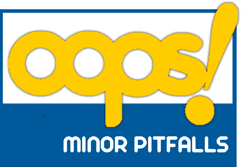

Evaluation results
There are three levels of importance in pitfalls according to
their impact on the ontology:
- Critical It is crucial to correct the pitfall. Otherwise, it could affect the ontology consistency, reasoning, applicability, etc.
- Important Though not critical for ontology function, it is important to correct this type of pitfall.
- Minor It is not really a problem, but by correcting it we will make the ontology nicer.
Pitfalls detected:
Ontology elements (classes, object properties and datatype
properties) are created isolated, with no relation to the rest of the
ontology.
• This pitfall appears in the following elements:
› http://xmlns.com/foaf/0.1/Organization
› http://xmlns.com/foaf/0.1/Person
• This pitfall appears in the following elements:
› http://xmlns.com/foaf/0.1/Organization
› http://xmlns.com/foaf/0.1/Person
This pitfall consists in creating an ontology element and failing
to provide human readable annotations attached to it. Consequently,
ontology elements lack annotation properties that label them (e.g.
rdfs:label, lemon:LexicalEntry, skos:prefLabel or skos:altLabel) or that
define them (e.g. rdfs:comment or dc:description). This pitfall is
related to the guidelines provided in [5].
• The following elements have neither rdfs:label or rdfs:comment (nor skos:definition) defined:
› https://www.w3.org/2019/wot/mqtt#PUBLISH
› https://www.w3.org/2019/wot/mqtt#SUBSCRIBE
› http://www.w3.org/ns/sosa/System
› https://www.w3.org/2019/wot/mqtt#Server
› http://xmlns.com/foaf/0.1/Person
› https://www.w3.org/2019/wot/mqtt#TopicFilter
› http://www.w3.org/ns/sosa/Property
› http://www.w3.org/ns/sosa/ActuationCollection
› https://www.w3.org/2019/wot/mqtt#UNSUBSCRIBE
› https://www.w3.org/2019/wot/mqtt#NetworkConnection
› http://xmlns.com/foaf/0.1/Organization
› https://www.w3.org/2019/wot/mqtt#ControlPacket
› https://www.w3.org/2019/wot/mqtt#Client
› http://www.w3.org/ns/sosa/ObservationCollection
› https://www.w3.org/2019/wot/mqtt#TopicName
• The following elements have neither rdfs:label or rdfs:comment (nor skos:definition) defined:
› https://www.w3.org/2019/wot/mqtt#PUBLISH
› https://www.w3.org/2019/wot/mqtt#SUBSCRIBE
› http://www.w3.org/ns/sosa/System
› https://www.w3.org/2019/wot/mqtt#Server
› http://xmlns.com/foaf/0.1/Person
› https://www.w3.org/2019/wot/mqtt#TopicFilter
› http://www.w3.org/ns/sosa/Property
› http://www.w3.org/ns/sosa/ActuationCollection
› https://www.w3.org/2019/wot/mqtt#UNSUBSCRIBE
› https://www.w3.org/2019/wot/mqtt#NetworkConnection
› http://xmlns.com/foaf/0.1/Organization
› https://www.w3.org/2019/wot/mqtt#ControlPacket
› https://www.w3.org/2019/wot/mqtt#Client
› http://www.w3.org/ns/sosa/ObservationCollection
› https://www.w3.org/2019/wot/mqtt#TopicName
This pitfall appears when any relationship (except for those that
are defined as symmetric properties using owl:SymmetricProperty) does
not have an inverse relationship (owl:inverseOf) defined within the
ontology.
• This pitfall appears in the following elements:
› https://doernern.github.io/MQTT4SSNOntology/MQTT4SSN.owl#isInitiatedBy
› https://doernern.github.io/MQTT4SSNOntology/MQTT4SSN.owl#isAcceptedBy
› https://doernern.github.io/MQTT4SSNOntology/MQTT4SSN.owl#unsubscribesPacket
› https://doernern.github.io/MQTT4SSNOntology/MQTT4SSN.owl#payloadEncodesActuationCollection
› https://doernern.github.io/MQTT4SSNOntology/MQTT4SSN.owl#receivesUnsubscribePacket
› https://doernern.github.io/MQTT4SSNOntology/MQTT4SSN.owl#payloadEncodesObservation
› https://doernern.github.io/MQTT4SSNOntology/MQTT4SSN.owl#observesTopic
› https://doernern.github.io/MQTT4SSNOntology/MQTT4SSN.owl#forwardsPublishPacket
› https://doernern.github.io/MQTT4SSNOntology/MQTT4SSN.owl#subscribesPacket
› https://doernern.github.io/MQTT4SSNOntology/MQTT4SSN.owl#publishesPacket
› https://doernern.github.io/MQTT4SSNOntology/MQTT4SSN.owl#payloadEncodesObservationCollection
› https://doernern.github.io/MQTT4SSNOntology/MQTT4SSN.owl#listensToTopic
› https://doernern.github.io/MQTT4SSNOntology/MQTT4SSN.owl#payloadEncodesActuation
› https://doernern.github.io/MQTT4SSNOntology/MQTT4SSN.owl#hasPayloadSize
› https://doernern.github.io/MQTT4SSNOntology/MQTT4SSN.owl#receivesSubscribePacket
• This pitfall appears in the following elements:
› https://doernern.github.io/MQTT4SSNOntology/MQTT4SSN.owl#isInitiatedBy
› https://doernern.github.io/MQTT4SSNOntology/MQTT4SSN.owl#isAcceptedBy
› https://doernern.github.io/MQTT4SSNOntology/MQTT4SSN.owl#unsubscribesPacket
› https://doernern.github.io/MQTT4SSNOntology/MQTT4SSN.owl#payloadEncodesActuationCollection
› https://doernern.github.io/MQTT4SSNOntology/MQTT4SSN.owl#receivesUnsubscribePacket
› https://doernern.github.io/MQTT4SSNOntology/MQTT4SSN.owl#payloadEncodesObservation
› https://doernern.github.io/MQTT4SSNOntology/MQTT4SSN.owl#observesTopic
› https://doernern.github.io/MQTT4SSNOntology/MQTT4SSN.owl#forwardsPublishPacket
› https://doernern.github.io/MQTT4SSNOntology/MQTT4SSN.owl#subscribesPacket
› https://doernern.github.io/MQTT4SSNOntology/MQTT4SSN.owl#publishesPacket
› https://doernern.github.io/MQTT4SSNOntology/MQTT4SSN.owl#payloadEncodesObservationCollection
› https://doernern.github.io/MQTT4SSNOntology/MQTT4SSN.owl#listensToTopic
› https://doernern.github.io/MQTT4SSNOntology/MQTT4SSN.owl#payloadEncodesActuation
› https://doernern.github.io/MQTT4SSNOntology/MQTT4SSN.owl#hasPayloadSize
› https://doernern.github.io/MQTT4SSNOntology/MQTT4SSN.owl#receivesSubscribePacket
Suggestions or warnings:
According to the highest importance level of pitfall found in your ontology the conformace bagde suggested is "Minor pitfalls" (see below). You can use the following HTML code to insert the badge within your ontology documentation:

<p>
<a href="http://oops.linkeddata.es">
<img src="http://oops.linkeddata.es/resource/image/oops_minor.png"
alt="Minor pitfalls were found" height="69.6" width="100" /></a>
</p>
References
Lexicalizing Ontologies: The issues behind the labels. In
Multimodal communication in the 21st century: Professional and academic
challenges. 33rd Conference of the Spanish Association of Applied
Linguistics (AESLA), XXXIII AESLA.
Ontology development 101: A guide to creating your first ontology.
Evaluation of Taxonomic Knowledge in Ontologies and Knowledge
Bases. Proceedings of the Banff Knowledge Acquisition for
Knowledge-Based Systems Workshop. Alberta, Canada.
Style guidelines for naming and labeling ontologies in the multilingual web.
Ontology Evaluation. PhD thesis.
Ontology evaluation. In Handbook on ontologies, pages 251-273. Springer.
Owl pizzas: Practical experience of teaching owl-dl: Common
errors & common patterns. In Engineering Knowledge in the Age of the
Semantic Web, pages 63-81. Springer.
Weaving the pedantic web. In Proceedings of the WWW2010 Workshop
on Linked Data on the Web, LDOW 2010, Raleigh, USA, April 27, 2010.
D7. 1.3-study on persistent URIs, with identification of best
practices and recommendations on the topic for the Mss and the EC. PwC
EU Services.
“Linked Data - Design issues”. http://www.w3.org/DesignIssues/LinkedData.html
Linked Data: Evolving the Web into a Global Data Space. Morgan & Claypool, 1st edition.
Is your linked data vocabulary 5-star?.
http://bvatant.blogspot.fr/2012/02/is-your-linked-data-vocabulary-5-
star_9588.html
Enter your ontology to scan: